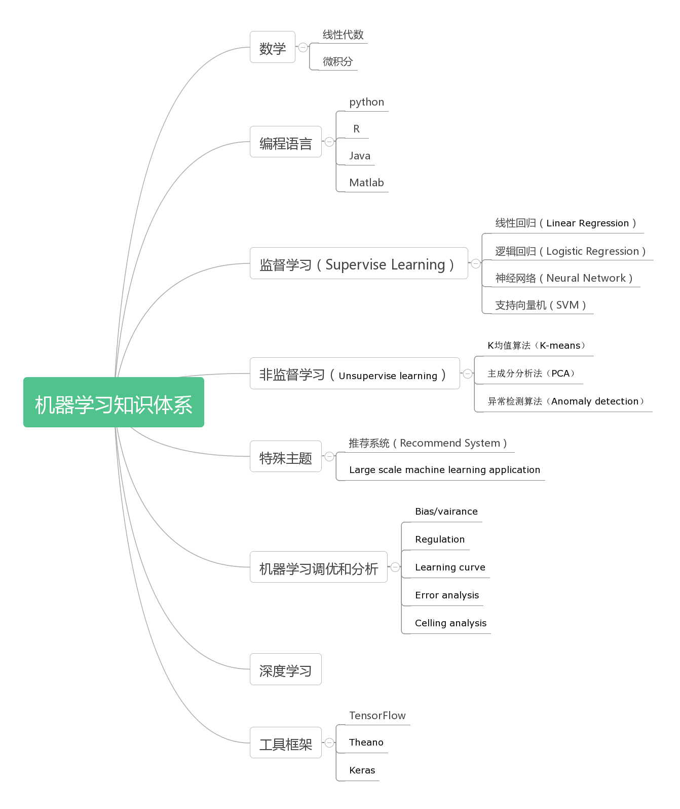

机器学习知识体系
随着2016年Alpha Go在围棋击败李世石，2017年初卡内基梅隆大学人工智能系统Libratus在长达20天的鏖战中，打败4名世界顶级德州扑克玩家，这标志着人工智能技术又达到了一个新的高峰。人工智能已经不再是在各大公司幕后提供各种智能推荐、语音识别算法的工具，它已经慢慢走向台前进入到平常百姓的视野之中。曾经有人描述人工智能就向一列缓缓开向人们的火车，一开始非常遥远而且看起来非常缓慢，它慢慢接近，直到人们清楚看到它的时候，它已经呼啸而过，把人远远抛在身后。现在似乎就是人们可以远远看到人工智能的时候，它已经发展数十年，但直到最近才引起广泛注意，随着大数据的积累、算法的改进、硬件的提升，人工智能可以在很多细分的领域成为专家，辅助人类甚至超过人类。
作为一名初学者，我也是刚刚接触人工智能和机器学习，希望能够和大家共同学习。接触一个领域的第一步是尽快的了解全貌并且搭建出相应的知识体系。大致提纲如下（后续不断补充）：

1 - 数学
线性代数、微积分
在整个机器学习过程中涉及大量矩阵运算和微积分导数的概念，因此建议初学者至少要有较为扎实的数学基础，对矩阵和微积分的概念了解比较清楚。否则在一些公式推导过程中会遇到较大障碍，而不断反复回来复习数学知识。
2 - 编程语言
Python/R/Java/Matlab 7 Steps to Mastering Machine Learning With Python
Python已经成为机器学习的第一语言，至于为什么知乎中有非常不错的解释。众多机器学习的框架都支持Python API，所以学习机器学习，Python语言语法估计是绕不过去。
3 - Supervise learning
Linear regression：机器学习知识体系 - 线性回归
Logistic regression： 机器学习知识体系 - 逻辑回归
Neural network：机器学习知识体系 - 神经网络（基础） 机器学习知识体系 - 神经网络（反向传播算法）
监督学习指的是人们给机器一大堆标记好的数据，比如一大堆照片，标记出哪些是猫的照片，哪些不是，然后让机器自己学习归纳出算法，可以判断出其他照片是否是猫。目前这个领域算法代表：Linear regression, Logistic regression, Neural network, SVM等等。
4 - Unsupervise learning
K-means: 深入浅出K-Means算法
PCA: 主成份分析算法 PCA
Anomaly detection: 异常检测
非监督学习指的就是人们给机器一大堆没有标记的数据，让机器可以对数据进行分类、检测异常等。
5 - Special topic
Recommend system
Large scale machine learning application
一些特殊算法，例如推荐系统。常用于购物网站，可以根据你的过往购物或评分情况，来向你推荐商品。
6 - Advice on machine learning
Bias/vairance: Understanding the Bias-Variance Tradeoff
Regulation
Learning curve
Error analysis: Accurately Measuring Model Prediction Error
Celling analysis
机器学习的建议，包含参数正则化、学习曲线、错误分析、调参等。
7 - Deep Learning
Neural Netwotk
深度学习是近期机器学习的一个热门分支，模拟人类大脑的思维方式，可以极大的提高正确率，是近来机器学习的一个非常大的突破。
8 - Tools/Framework
TensorFlow/Theano/Keras
很多大厂就开源了一些机器学习的框架，基于这些框架可以很容易搭建机器学习的平台。
推荐的学习资料：
Github上面有一份非常详尽的学习路径 awesome-deep-learning
我个人推荐的几个经典资料：
机器学习
Andrew NG的Coursera的机器学习入门：这个教程非常适合初学者，没有很高深的数学推导，Andrew也是业内大牛但非常谦逊，讲解非常浅显易懂。
Neural Networks for Machine Learning by Geoffrey Hinton in Coursera (2012)
几本经典著作：An Introduction to Statistical Learning，Pattern Recognition and Machine Learning，The Elements of Statistical Learning
深度学习
Neural Networks and Deep Learning：Michael Nielsen用非常浅显易懂的方式介绍了神经网络和深度学习，并且提供了一个手写数字识别的例子，非常适合入门。
UFLDL Tutorial I UFLDL Tutorial II：Andrew NG主导的Deep Learning的学习资料，内容非常精炼，适合稍微有些基础的同学。
Deep Learning: 几位大神共同编写的关于深度学习的free book。
零基础入门深度学习：一位大神写的关于深度学习的入门教程，由浅入深的详细介绍了深度学习的几个重要内容，非常适合入门的学习。
Convolutional Neural Networks for Visual Recognition - Stanford by Fei-Fei Li, Andrej Karpathy (2015)
Convolutional Neural Networks for Visual Recognition - Stanford by Fei-Fei Li, Andrej Karpathy (2016)
Deep Learning Course by Yann LeCun (2016)
从人工智能到机器学习，再到最近大热的深度学习，人们已经在这个领域研究了数十年，现在虽然取得一定的突破，但是离真正的人工智能还有非常长的距离。而且人工智能一定要跳出学术界的研究框架，结合工业界的应用，从2016年可以看到大量的实际应用场景，例如自动驾驶、Apple Siri、Amazon Echo、谷歌翻译等等，我相信未来人工智能领域极有可能成为下一代颠覆性的技术革命。

谢谢你的欣赏，请随意转载。